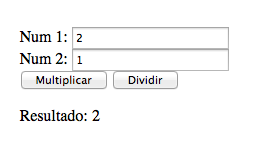
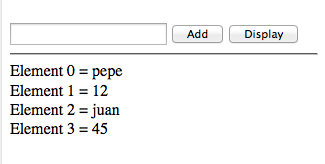

jQuery
jQuery es una librería de Javascript que simplifica el uso de funciones complejas de Javascript. Permite manipular código HTML, CSS, implementar eventos, hacer animaciones, y hacer llamadas al servidor con AJAX.
¿Cómo funciona? Basta con incluir en el 'head' dos lineas. Una con la librería de jQuery proporcionada por google, y otra con el archivo ".js" con el contenido del código. El archivo hay que crearlo, y dejarlo en la misma carpeta del html. Las lineas hay que introducirlas de la siguiente forma:
<head> <script src="https://ajax.googleapis.com/ajax/libs/jquery/1.12.2/jquery.min.js"></script> <script src="mi_jquery.js"></script> </head>
Para imprimir resultados, hay que usar el console.log (igual que print en ruby), y observar el resultado inspeccionando elemento en el navegador, en la pestaña "Console". El codigo jQuery tiene que declararse en el archivo .js, metiendolo en un document ready de la siguiente forma:
// ejemplo.js // $(document).ready(function(){ // EL CODIGO jQuery AQUI, por ejemplo: console.log("Hey... yo!"); });
1. Descarga el siguiente archivo: ejercicio_jquery.zip. Dentro hay un archivo html (ejercicio.html), y varios archivos javascript (ej1selectors.js, ej2dom.js, etc..). Los archivos javascript contienen los enunciados de los ejercicios (comentados). El objetivo es ir resolviendolos, y una vez resueltos, comentar el resultado, seguir con el siguiente y así sucesivamente. El archivo html no requiere ningún tipo de manipulación para la resolución de los ejercicios. Solo hay que incluir cada vez el archivo javascript del ejercicio correspondiente.
1.1 Incluir en el head el primer archivo de ejercicios (ej1selectors.js). Abrir el archivo, e ir resolviendo los enunciados. Los resultados se comprueban recargando el html y observando el resultado. Una vez resuelto un ejercicio, hay que comentarlo para seguir con el siguiente.
1.2 Eliminar el ej1selectors.js del head, y añadir el segundo ejercicio (ej2dom.js). Corresponde a la manipulación del DOM. Resolver los ejercicios. Para cualquier dificultad, buscad en las documentaciones en los links de la parte superior de la pagina.
1.3 Eliminar del head el ej2dom.js, e incluir ej3animation.js. Contiene ejercicios para aprender de animaciones de jQuery. Como con los anteriores, ir comentando los ejercicios resueltos, y verificando en el html los resultados.
1.4 Reemplazar en el head el ej3animation.js por ej4events.js, y resolver los ejercicios.
AJAX
Con AJAX se pueden realizar peticiones al servidor, y obtener una respuesta en segundo plano. La respuesta contiene datos que, a través de Javascript, nos permitirá modificar los contenidos de la pagina creando efectos con jQuery. En definitiva, AJAX permite que una pagina que ya haya sido cargada, solicite nueva información al servidor, utilizando formularios, botones (submit), valores (value) que provienen de elementos del html.
Existen varios tipos de llamadas, entre ellas dos importantes: las GET y las POST. Las llamadas GET sirven para obtener información del servidor (base de datos). Se puede considerar un 'request' al servidor. Al hacer una llamada GET, obtendremos una respuesta del servidor con la información solicitada. Las llamadas POST son para enviar información al servidor. Esa información será procesada por el servidor (ruby), y obtendremos igualmente una respuesta con información adicional. Para actualizar información, existe la llamada PUT, y para borrar información del servidor, existe la llamada DELETE. Pero esas dos acciones se pueden realizar igualmente con una llamada POST, dependiendo del caso. Para mas información, mirar aqui.
2. Descarga el siguiente archivo: ejercicio_ajax.zip. Dentro hay varios archivos, entre ellos un 'exercise.html' en el que hay que ir observando en la consola los resultados (el html ni el css requieren modificación). Tampoco hace falta incluir archivos javascript. Para resolver los ejercicios, hay que instalar los siguientes paquetes:
gem install -N sinatra gem install -N sinatra-contrib
2.1 Acceder a la carpeta de los ejercicios de ajax desde el terminal, y ejecutar el archivo json.rb de la siguiente forma: ruby json.rb. Esperar unos segundos, y acceder a este link desde el navegador: http://localhost:3000
2.2 Abrir el archivo 'ajax.js' que se encuentra en la carpeta 'public'. Dentro hay cuatro ejercicios. Resolver uno a uno. Mirar previamente como hacer llamadas GET y POST para poder resolver algún que otro ejercicio.
3. Descarga el siguiente archivo: ajax_caller.zip. Dentro hay un archivo index.html y un archivo javascript 'slutcaller.js'. Al abrir el index.html con el navegador, hay un link y cuatro formularios. El objetivo es hacer llamadas get, post, put y delete a través de esos formularios. Las llamadas se hacen a la siguiente pagina: http://slutcalls.herokuapp.com/. Hay que ir recargandola y verificando que las llamadas actúan en la página.
3.1 Al hacer click en el link con id 'get-slutcall', se debe hacer una llamada GET a http://slutcalls.herokuapp.com/ironslut. La resupuesta se tiene que mostrar con un alert, y en la consola del navegador del index.html.
3.2 Escribe algo en el input con id 'name'. Al hacer click en el botón con id 'name-go', se debe hacer una llamada GET http://slutcalls.herokuapp.com/ironslut con lo que se ha escrito en el input como parametro en la url (despues de /ironslut). La respuesta se tiene que mostrar en un alert, y en la consola del navegador.
3.3 Escribe un nombre y alguna info en los inputs con id 'name-post' y 'info'. Al hacer click en el botón con id 'go-post', se tiene que hacer una llamada POST a http://slutcalls.herokuapp.com/ironslut con 'name' y 'info' como parametros (stringificados en JSON). Si la llamada sale bien, en la web http://slutcalls.herokuapp.com tiene que añadirse el nombre y el comentario. La respuesta de la llamada se tiene que mostrar en un alert, y en la consola del navegador.
3.4 Escribe el nombre que escribiste en el 3.3 en el input con id 'name-put', y una info diferente que la del 3.3 en el input con id 'info-put'. Al hacer click en el botón 'go-put', se tiene que hacer una llamada PUT a http://slutcalls.herokuapp.com/ironslut/, con 'name' como parametro en la url (despues de /ironslut), e 'info' en la llamada en JSON stringificado. Recargar la pagina http://slutcalls.herokuapp.com y observar el resultado. La respuesta de la llamada se tiene que mostrar en un alert y en la consola del navegador. Observar la respuesta del servidor en caso de que no exista el nombre introducido en el input.
3.5 Escribe el nombre que usaste en el 3.3 y 3.4 en el input con id 'name-delete'. Al hacer click en el botón 'go-delete', se tiene que hacer una llamada DELETE a http://slutcalls.herokuapp.com/ironslut/, con el contenido del input como parametros en la url. Recargar la pagina http://slutcalls.herokuapp.com y observar el resultado. La respuesta de la llamada se tiene que mostrar en un alert y en la consola del navegador. Observar la respuesta del servidor en caso de que no exista el nombre introducido en el input.
Javascript
4. Escribe un programa que imprima el día y la hora actual en el siguiente formato:
output: Hoy es Jueves.Hora actual: 2PM : 11 : 43
5. Escribe un programa que imprima la fecha actual. Se tiene que imprimir en los siguientes formatos: mm-dd-yyyy, mm/dd/yyyy or dd-mm-yyyy, dd/mm/yy.
6. Escribe un programa que pida al usuario un año en un alert con input, y devuelva otro alert con true si es bisiesto, y false en caso contrario.
7. Escribe un programa que busque e imprima los años en los que el 1 de Enero haya sido Domingo entre 2010 y 2050.
8. Escribe un guessing game. Pide al usuario un numero entre 1 y 10 a través de un input en un alert, y que devuelva "Has acertado" en caso de acierto, y "Has fallado, era 8" en caso de fallo.
9. Escribe un programa que calcule los días que quedan hasta noche buena.
10. Escribe un programa que calcule la división y multiplicación de dos numeros. Se tiene que visualizar en una vista html de la siguiente forma:

11. Escribe un programa que convierta temperaturas de centigrados a fahrenheit y viceversa.
El resultado se tiene que mostrar en una vista del estilo del ejercicio anterior.
[ formula : c/5 = (f-32)/9 ]
12. Escribe una función que invierta un numero.
input: x = 32243output: y = 34223
13. Escribe una función que devuelva una string con sus letras en orden alfabético
input: str = 'slut'output: res = 'lstu'
14. Escribe una función que reciba una string en minúsculas y que convierta la primera letra de cada palabra en mayuscula.
15. Escribe una función que reciba una string y devuelva un numero que corresponda al numero de vocales que hay en esa string.
16. Escribe una función que reciba un numero y devuelva true si es primo, en caso contrario que devuelva false.
17. Escribe una función que reciba un argumento y devuelva su tipo. La función tiene que poder diferenciar entre objetos, booleanos, funciones, numeros, strings, arrays y undefined.
18. Escribe una función que reciba un array de números y devuelva el segundo mas pequeño y penúltimo más grande.
input: arr = [1,2,3,4,5]output: res = [2, 4]
19. Escribe una función que devuelva true si un numero es perfecto. Un numero es perfecto si la suma de sus divisores es igual al propio numero. Por ejemplo, los divisores de 6 son 1, 2 y 3. 6 es perfecto por que 6 = 1 + 2 + 3
20. Escribe una función que reciba una cantidad en euros y devuelva la cantidad de los centimos en monedas.
input: eur = 1.46output: res = [25, 10, 10, 1]
21. Escribe una función que reciba un numero y que devuelva una string con caracteres randomizados y de longitud el numero recibido.
22. Escribe una función que reciba dos parametros: una string y un caracter. La función tiene que devolver el numero de veces que aparece ese caracter en la string.
input: char_times("ironslut course", "u")output: 2
23. Escribe una función que reciba un array de numeros y lo devuelva ordenado en orden decreciente, usando el método de ordenación 'Bubble sort'. Mas info aqui.
24. Escribe una función que devuelva el factorial de un número. El factorial de 5 es 120, es decir, 1 x 2 x 3 x 4 x 5 = 120. Es factorial de 3 es 6, es decir, 1 x 2 x 3 = 6.
25. Escribe un programa que añada elementos en un array, y los muestre en una vista. Los elementos se tienen que poder meter en un input en un html, y al hacer click en un botón 'Add', se tienen que ir metiendo en el array. Al hacer click en el botón 'Display', se tiene que mostrar la lista de elementos metidos en el array como en el siguiente ejemplo:
26. Escribe un programa que imprima en una vista el ancho y el alto del navegador. Si la ventana del navegador se redimensiona, los valores se tienen que actualizar.
27. Escribe una función que reciba un objeto, y devuelva una lista con sus propiedades:
input: obj = {name: "pepe", edad: 28, ciudad: "garrucha"}output: name, edad, ciudad
28. Escribe una función que reciba un objeto, y elimine la segunda propiedad:
input: obj = {name: "pepe", edad: 28, ciudad: "garrucha"}output: res = {name: "pepe", ciudad: "garrucha"}
29. Escribe un programa que cree un reloj y escriba la hora entera en la consola cada segundo:
output: "14:30:42""14:30:43"
"14:30:44"
30. Escribe una función que reciba un objeto Date() con una fecha de nacimiento, y calcule la edad:
input: calculate_age(birthday)output: 32 years old